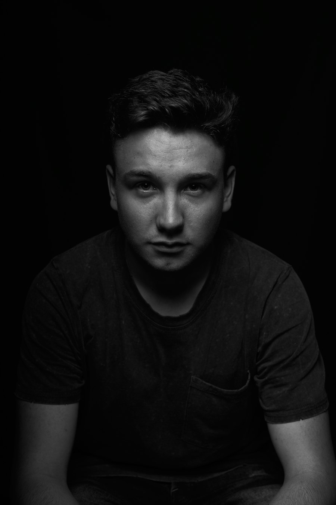
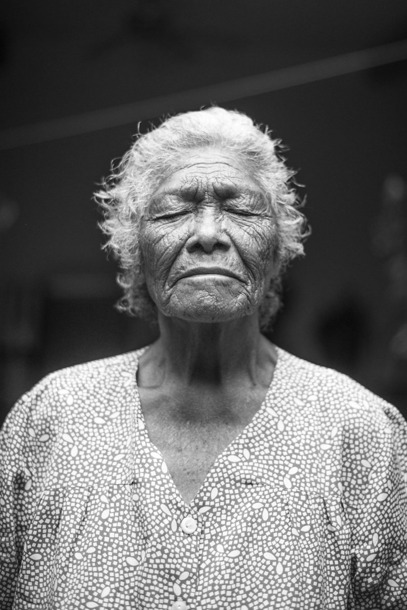
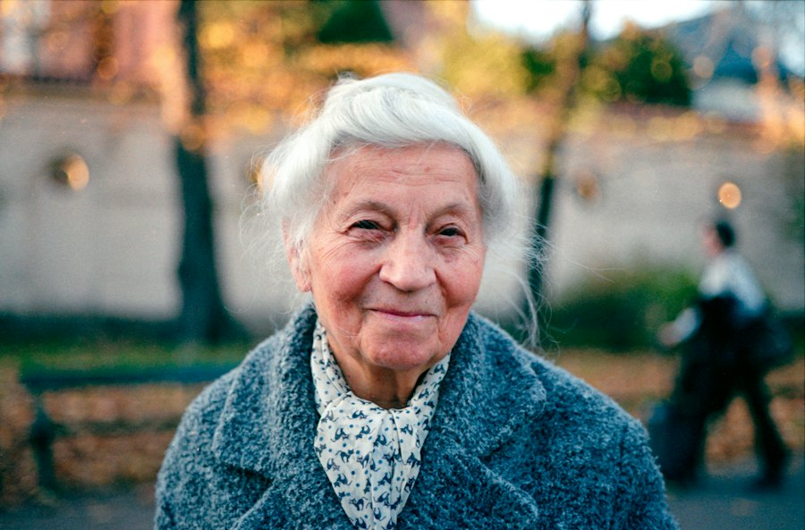

A black and white portrait and testimony series. Twelve people, five questions, and one month of posts, plus a printed display wall for the church lobby.
Concept projectEvery church is full of stories nobody has heard. Over one month we photographed twelve people and asked each of them the same five questions. The look is documentary: black and white, real light, no posing, and plain typewriter-style text so the words feel like a note, not an ad.
Twenty-minute portrait sessions in places that matter to each person: their kitchen, their workshop, the pew where they sit.
A short recorded interview using the same five questions, so the stories can be compared and grouped later.
One story a week on Instagram and Facebook, with the full set printed for a lobby display.
Each person gets a three-slide carousel: the portrait with one line, the longer story, and an invitation. Captions stay in their own words, edited only for length.

FACES OF HOLLOW CREEKI walked in angry at God. Nobody asked me to fix that first.Marcus, 31 · Greeter
"My wife had just left. I came because the building had a light on at 7 am on a Tuesday. A guy named Ray was making coffee and he just handed me a cup and sat down."
"That was four years ago. Now I'm the one making the coffee."
Every face here has a story.
Hear more on Sundays at 9 & 11.

FACES OF HOLLOW CREEKI've taught three-year-olds for twenty-two years. They taught me more.Doris, 74 · Preschool teacher
The best sixteen frames get printed at 11 × 14 and hung in the main hallway, with a QR code on the plaque that leads to the full stories in the app.
A Lightroom preset built for the series, so any volunteer can match the look. Original color is on the left, the finished edit on the right.

ORIGINALHOLLOW CREEK B&W| Setting | Value |
|---|---|
| Treatment | Black & White |
| Contrast | +18 |
| Highlights / Shadows | −22 / +14 |
| Clarity | +12 |
| Grain amount / size | 22 / 30 |
| Vignette | −10 |
Same questions, every interview. They are open enough that people tell stories instead of giving answers.